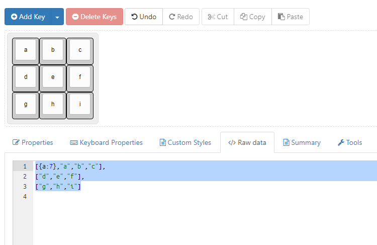
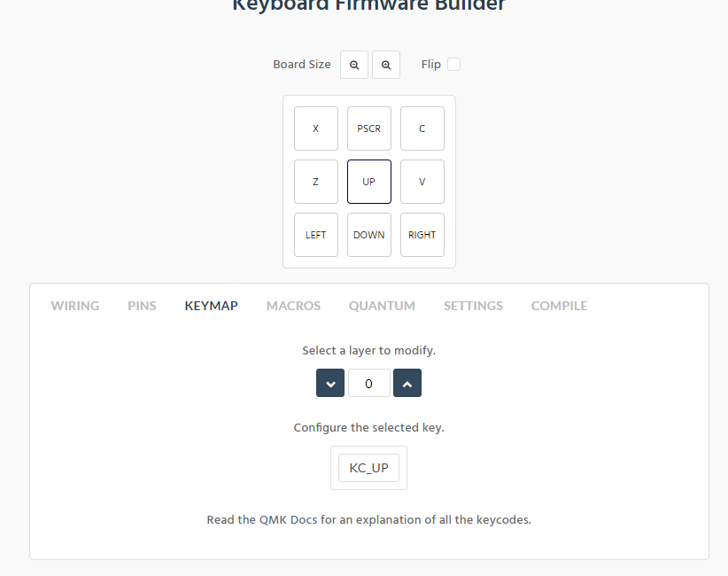
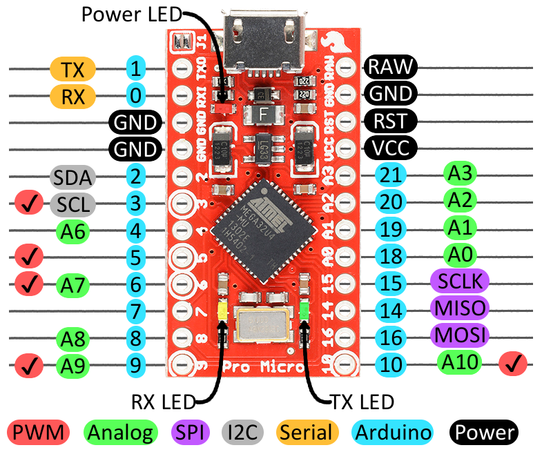
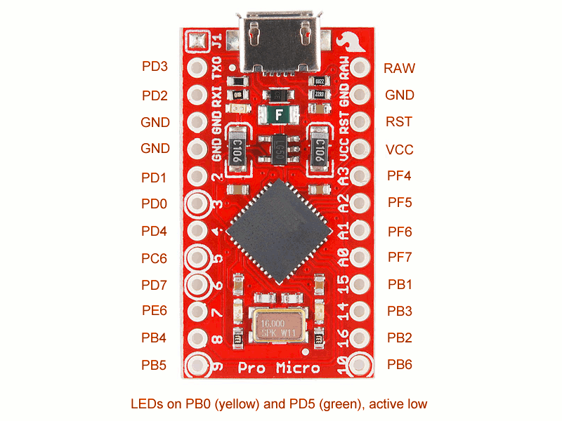
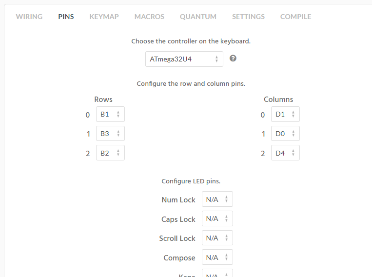
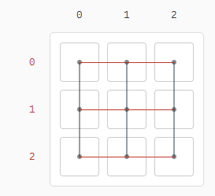

Firmware
Programming the Layout
> Head over to the keyboard layout editor and create your layout using the add key function. if you are using a keyboard layout that already exists, use the preset dropdown and edit it as you see fit. there's no need to decide key binds yet, but i always put in placeholders just to be sure. finally copy the text in raw data.

Next head to kbdfirmware and paste the data and hit upload now move to keymap and you can choose the exact bind and layers you want, etc. (this example is just a few keys i need and what you will see)

Move to the pins section and choose the rows and columns, follow this diagram and only choose digital pins (if using pro micro) but it doesn't matter which ones of the digital pins you pick

the ones with p's are digital, and you just follow the letters after them

example:

Then just name your layout (optional: and hit save configuration to save the .json file) then compile> and download the .hex file. The wiring section will show you where to wire everything up
Where the numbers are is where you wire the Arduino with what pins you chose. on to handwire tutorial
(this is a top view, so you will have to invert it when you solder it from the bottom)
